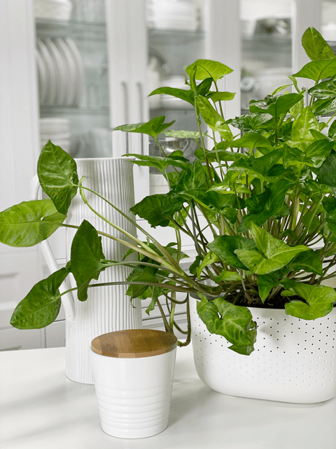
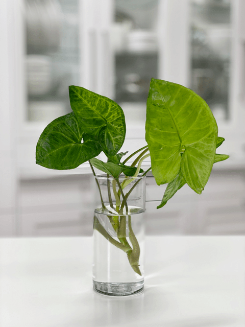

Arrowhead Plant | Care Difficulty – Easy
Young arrowhead plants are bushy and usually pretty full, making them attractive indoor plant choices for coffee tables, side tables, and other surfaces. As the plants grow and mature, they develop a climbing habit, making them fun to grow up trellises or other structures. However, you can prune them back to keep them bushy if you don’t want them trailing around your house. I have also seen them referred to as the goosefoot plant, based on the shape of the leaves.

When you don’t know anything about houseplants, any plant can seem intimidating. But once you get 1,2,10, 30 of them in your house, your anxiety starts to diminish. That is when the addiction kicks in! I went through a phase where I didn’t research what care a particular plant needed, I just went for the gusto! I don’t advise this approach. You should always learn about the care of a plant before bringing it home so you have a better chance of keeping it alive.
If you want to add color your plant collection, the arrowhead plant comes in beautifully variegated foliage flushed with white, cream, silver, pink, or purple. When it comes to plants, I am a green girl… that’s mainly because I use my plants as decor, second to furniture.
Light Requirements
Grow arrowhead plants in low- or medium-light spots. Most varieties can grow in brighter light, as long as they’re not exposed to too much direct sun, especially in hot-summer climates. If exposed to direct sunlight, they can suffer from sunburn. If you own one that is light green, white, pink, or burgundy in color, you need a medium to high light. The leaves of all arrowhead plants are “bleached” and turn an ugly gray-green color when placed in the direct sun.
Water Requirements
The arrowhead plant should have moist potting soil and dry out slightly between waterings. Add less water in the fall and winter.
Optimum Temperature
They prefer average to warm temperatures of 60-75 degrees (F). As with most plants, avoid cold drafts and heat vents.
Fertilizer – Plant Food
Fertilize every two weeks in the spring and summer, when an arrowhead plant is actively growing, with a balanced, liquid plant food diluted to 1/2 the recommended strength. Feed monthly in the fall and winter.
Additional Care
- Remove any dead, discolored, damaged, or diseased leaves and stems as they occur with clean, sharp scissors.
- Clean the leaves often enough to keep dust off.
- Prune arrowhead plants any time you like by pinching off new growth. This will encourage the arrowhead plant to stay full and bushy instead of becoming a climbing vine.

Plant Characteristics to Watch For
Diagnosing what is going wrong with your plant is going to take a little detective work, but even more patience! First of all, don’t panic and don’t throw out a plant prematurely.
Take a few deep breaths and work down the list of possible issues. Below, I am going to share some typical symptoms that can arise. When I start to spot troubling signs on a plant, I take the plant into a room with good lighting, pull out my magnifiers, and start by thoroughly inspecting the plant.
The leaves look bleached almost, a gray-green color.
- The leaves of all arrowhead plants are “bleached” and turn an ugly gray-green color when placed in the direct sun.
- Solution: Relocate the plant or hang a sheer curtain in the window to soften the light coming in.
My plant is looking pale and anemic.
- This can be due to spider mites.
- Solution: See below regarding pest invasions.
My plant has brown spots with yellow rings around them.
- Arrowhead plants can be susceptible to leaf spot disease. The attacking fungus or bacteria leaves brown spots trimmed in yellow where it is feeding on the leaves. These spots may vary in shape, color, and size.
- Solution: Increase air circulation, make sure the plant is in a well-draining pot, remove dry leaves, and reduce watering. Never mist a plant if leaf spot is suspected. You can use a homemade remedy of a tablespoon or two of baking soda and a teaspoon or two of mineral oil in a spray bottle of water. Shake the solution well and then spray all areas of the plant that are infected. Keep infected plants away from your other houseplants until the situation is resolved.
My plant doesn’t appear to be growing.
- First off, most plants go dormant (growth slows down) in colder seasons, so keep that in mind. During the growing season, this can occur when a plant lacks fertilizer (nutrients in the soil), when it is not getting enough light, or from overwatering.
- Solution: Start by acquiring some patience. You won’t find it on Amazon; you will have to do some personal-growth work for this. Next, start working down the troubleshooting list. It may take some time to figure it out, but in the meantime, enjoy the growth stage that the plant is at. Soon, it will be all grown up and out on its own.
The leaves are yellowing.
- This happens when the plant is either underwatered or overwatered.
- Solution: This is easy to identify when you take a look at how water has been provided and if the soil is too wet or dry. If you do the opposite of what you have been doing, the problem should go away. Also, remove the yellowing leaves that look unhealthy.
The leaf tips are turning brown.
- The cause is likely due to dry air and low humidity.
- Solution:- Add a humidifier to the room.
Common Bugs to Watch For
If you want to have healthy houseplants, you MUST inspect them regularly. Every time I water a plant, I give it a quick look-over. Bugs/insects feeding on your plants reduces the plant sap and redirects nutrients from leaves. Some chew on the leaves, leaving holes in the leaves. Also watch for wilting or yellowing, distorted, or speckled leaves. They can quickly get out of hand and spread to your other plants.
If you see ONE bug, trust me, there are more. So, take action right away. Some are brave enough to show their “faces” by hanging out on stems in plain sight. Others tend to hide out in the darnedest of places, like the crotch of a plant or in a leaf that has yet to unfurl.
- Mealybugs look like small balls of cotton. They can travel, slooooooowly, but they have a strong will and determination! Though they are slow-moving, if any plant is touching another, there is a chance the mealybug will hitch a ride on a new leaf and spread. They breed like rabbits of the insect world. Females can deposit around 600 eggs in loose cottony masses, often on the underside of leaves or along stems.
- Scales are dark-colored bumps that are primarily immobile insects that stick themselves to stems and leaves. They are rather inconspicuous and don’t look like a typical insect. They can range in color but are most often brownish in appearance. They’re called “scales” primarily due to their scale-like appearance on a plant, due to waxy or armored coverings. They are often seen in clumps along a stem, sucking away at the plant’s juices with their spiky mouthpart.
- Aphids are more commonly seen if you place your plants outdoors. Aphids are indeed bugs. They are tiny insects that, along with black, also come in shades of yellow, green, brown, and pink. They are often found on the undersides of leaves.
- Spider mites are more common on houseplants. They are not insects – they are related to spiders. These appear to be tiny black or red moving dots. Spider mites are nearly invisible to the naked eye. You often need a magnifying lens to spot them, or you may just notice a reddish film across the bottom of the leaves, some webbing, or even some leaf damage, which usually results in reddish-brown spots on the leaf.

Propagation
As I was taking photos for this posting, I noticed that a stem hanging out from the front side of the plant. To help retain the lushness of this plant, I decided to cut it off and propagate it so I can grow another plant.
- Cut a 3-to-5-inch stem from an existing healthy plant, leaving at least one node (the point at which a leaf emerges from the stem) and some leaves at the tip.
- Place the cutting in a clean container with fresh tap water, making sure there are no leaves submerged under the water.
- Set the container in a location where it will receive bright light but not direct sunlight.
- Keep cuttings away from cold drafts. A room temperature of about 70ᵒF is ideal.
- Now, we need to wait for the plant stem to produce some roots. This process can take several weeks. While you wait, it is important to change the water in your container periodically so that it stays clean and provides oxygen. Bacterial growth in the water can lead to rotting. Change water at least twice a week or when it starts to look cloudy.
- Once you see roots form on your stems, let them develop in water for another week or two and then plant them into a small, well-draining container with potting medium.
- Keep the medium moist until you begin to see signs of new leaf initiation on the plants, and then cut back on watering to about once each week.
Toxicity
Arrowhead plants have medium to severe toxicity. Eating parts of these houseplants may result in vomiting, diarrhea, stomach pain, skin irritation, and breathing difficulties.
© AmieSue.com